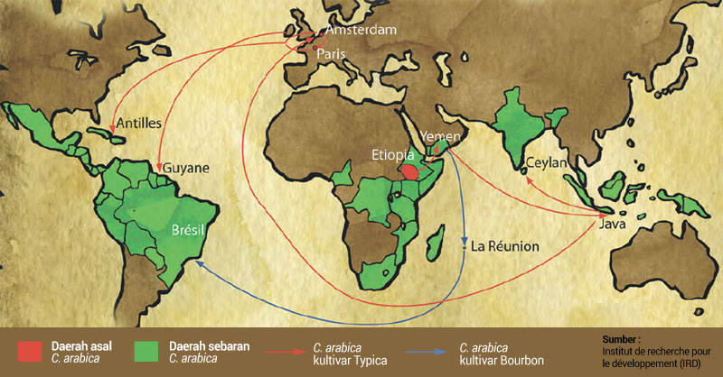

Hampir semua literatur yang membahas sejarah kopi menyetujui asal mula tanaman kopi dari Abyssinia, suatu wilayah di Afrika yang dahulu ada di bawah Kekaisaran Etiopia. Saat ini wilayah tersebut mencakup teritori negara Etiopia dan Eritrea. Di masa awal semua tanaman kopi yang dibudidayakan merupakan jenis kopi arabika (Coffea arabica).
Dari Abyssinia tanaman kopi dibawa dan dibudidayakan di Yaman. Diperkirakan tanaman kopi mulai dibudidayakan di Yaman pada tahun 575 Masehi. Pada masa ini perkembangan budidaya kopi berjalan lambat. Biji kopi hanya diperdagangkan ke luar Arab lewat pelabuhan Mocha di Yaman.
Para pedagang Arab mencoba melindungi eksklusifitas tersebut dengan mewajibkan merebus biji kopi yang akan diperdagangkan. Dengan harapan biji kopi tersebut tidak bisa ditumbuh menjadi tanaman.
Upaya untuk mengisolasi biji kopi oleh para pedagang Arab tidak berhasil. Pada tahun 1616 orang Belanda berhasil membawa tanaman kopi dari pelabuhan Mocha ke Holand, Belanda. Tahun 1658 bangsa Belanda mulai mencoba membudidayakan tanaman kopi di Srilangka. Tidak ada laporan budidaya tanaman ini menuai sukses besar.
Diketahui juga orang-orang Eropa pernah mencoba membudidayakan tanaman kopi di Dijon, Perancis. Namun upaya ini gagal total, kopi tidak bisa tumbuh di tanah Eropa.
Selain lewat pelabuhan ternyata banyak pintu masuk lain yang memungkinkan lalu lintas perdagangan biji kopi. Salah satunya lewat perjalanan para peziarah yang ingin berhaji ke Mekah dan Madinah. Pada tahun 1695 Baba Budan, seorang peziarah dari India, berhasil membawa biji kopi produktif ke luar Arab. Ia membudidayakan tanaman kopi di Chikmagalur, India bagian Selatan.
Pada tahun 1969 Belanda mendatangkan kopi dari Malabar, India, ke Pulau Jawa. Tanaman kopi tersebut berasal dari biji yang di bawa dari Yaman ke Malabar. Tanaman kopi yang tersebut ditanam di Kadawung, namun upaya ini gagal karena banjir.
Tiga tahun kemudian Belanda mendatangkan kembali stek kopi dari Malabar. Upaya kali ini menuai sukses. Kopi tumbuh dengan baik di perkebunan-perkebunan di Jawa. Hasil produksinya menggeser dominasi kopi Yaman. Bahkan saat itu Belanda menjadi pengekspor kopi terbesar di dunia.
Kopi didatangkan ke wilayah Amerika dan kepulauan di sekitarnya lewat dua pintu. Di mulai pada tahun 1706 ketika Belanda membawa tanaman kopi dari Jawa ke kebun raya di Amsterdam. Dari Amsterdam tanaman kopi di bawa ke Suriname. Sebagian lain diberikan sebagai hadiah kepada Raja Louis XIV di Paris.
Pada tahun 1720 tanaman kopi dari Paris dibawa untuk ditanam di koloni Perancis di Kepulauan Karibia. Kisah perjalanan tanaman kopi sangat populer. Diceritakan sebuah pohon kopi yang di bawa dengan kapal Perancis bisa tetap hidup karena disirami dengan air minum milik petugas pembawanya. Semua tanaman kopi yang berasal dari sumber di Amsterdam ini dikenal dengan kultivar Typica.
Jalan lain tanaman kopi masuk ke Amerika lewat Pulau Bourbon, sekarang La Reunion. Tanaman berasal dari biji yang diberikan oleh utusan Sultan Yaman kepada Raja Louis XIV pada trahun 1715. Perancis menerima 60 butir benih kopi di Bourbon. Kemudian benih ini menyebar ke daerah jajahan Perancis di Amerika dan daerah lainnya. Tanaman kopi ini dikenal dengan kultivar Bourbon. Kedua kultivar kopi arabika, yakni Typica dan Bourbon dipercaya menjadi sumber tanaman kopi yang saat ini dikembangkan di berbagai perkebunan.